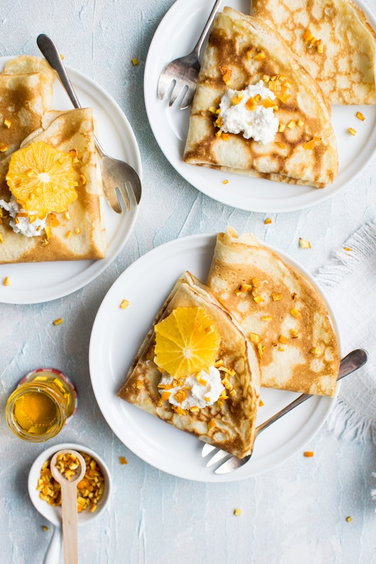

Enkelt recept på pannkakor
Gör traditionella tunna pannkakor med detta enkla och goda pannkaksrecept.
Ingredienser
För 4 portioner
- 2 1/2 dl vetemjöl
- 1/2 tsk salt
- 6 dl mjölk
- 3 ägg
- smör till stekning
- sylt, bär eller frukt till servering
Så här gör du
- Blanda mjöl och salt i en bunke.
- Vispa i hälften av mjölken och vispa till en slät smet.
- Vispa i resten av mjölken och äggen.
- Låt smeten vila ca 10 minuter.
- Stek tunna pannkakor i lite smör, för varje pannkaka.
- Servera med sylt, bär eller frukt.
Serveringsförslag

